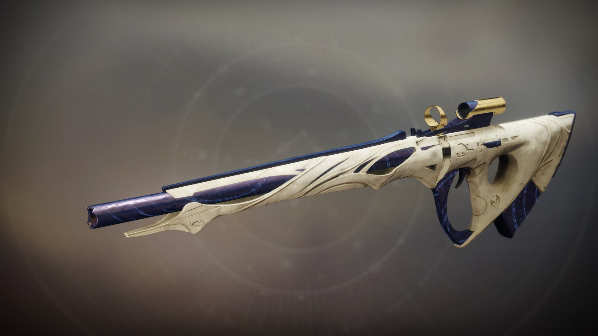
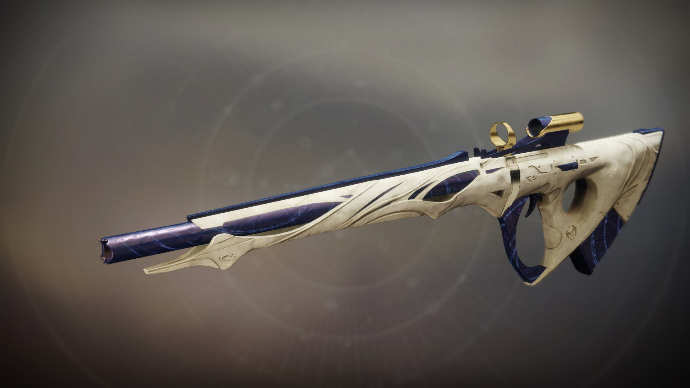

변신(4년차 물리 정찰소총)




스텟
충격:67
사거리:74
안정성:22
조작성:29
재장전 속도:25
재장전 시간:2.75s
조준 지원:29
배율:21
공중 효율:10
반동 방향:78
분당 발사 수:150
탄창
특성
풀 보어
총열
이중 총열입니다.
안정성+7 조작성+7
안정성+7 조작성+7
나팔 탄창
탄창
빠른 재장전에 최적화되어 있습니다.
재장전 속도+15 안정성+5
재장전 속도+15 안정성+5
탄약 되감기
속성
이 무기의 탄칭이 비면 적중 횟수에 기반하여
예비 탄약으로 탄창을 보충합니다.
예비 탄약으로 탄창을 보충합니다.
아드레날린 중독자
속성
수류탄 또는 이 무기로 결정타를 기록하면
해당 무기의 공격력과 조작성이 증가합니다.
해당 무기의 공격력과 조작성이 증가합니다.
폭발적 협정
기원 속성
수류탄 능력을 활성화하면 해당 무기의 안정성과
재장전 속도가 추가로 증가합니다.
치유 수류탄 및 수류탄 결정타 시 보너스가 추가로 중첩됩니다.
재장전 속도가 추가로 증가합니다.
치유 수류탄 및 수류탄 결정타 시 보너스가 추가로 중첩됩니다.
다각형 강선
총열
반동 감소에 최적화된 총열입니다.
안정성+10
안정성+10
합금 탄창
탄창
탄창이 비었을 때 재장전 속도가 빨라집니다.
광란
속성
이 무기로 적을 처치하면 일시적으로 공격력이 증가합니다.
3번 중첩됩니다.
3번 중첩됩니다.
살상 탄창
속성
처치 후 재장전하면 공격력이 증가합니다.
망치 단조 강선
총열
튼튼한 원거리용 총열입니다.
사거리+10
사거리+10
안정 탄약
탄창
이 탄창은 반동 제어에 최적화되어 있습니다.
안정성+15 공중 효율+7 사거리-5
안정성+15 공중 효율+7 사거리-5
완벽한 부유
속성
적정 지속 시간 동안 전투에 참여하면,
전투에서 벗어날 때까지 공중 효율이 증가하고
피격 반동이 감소합니다.
전투에서 벗어날 때까지 공중 효율이 증가하고
피격 반동이 감소합니다.
폭발 탄약
속성
투사체가 적중 시 광역 폭발을 일으킵니다.
풀 보어
총열
원거리 사격에 최적화된 총열입니다.
사거리+15 조작성-5 안정성-10
사거리+15 조작성-5 안정성-10
연장 탄창
탄창
이 무기는 탄창의 크기를 크게 증가시킨 대신
재장전 속도가 훨씬 느립니다.
공중 효율+10 탄창+3 재장전 속도-20
재장전 속도가 훨씬 느립니다.
공중 효율+10 탄창+3 재장전 속도-20
접근 회피
속성
가까이에 대상이 없을 때 재장전, 사거리, 정확도가 증가합니다.
물리 진동
속성
대상에게 지속적인 물리 피해를 주면
주변 모든 대상에게 피해를 주는 충격파를 방출합니다.
주변 모든 대상에게 피해를 주는 충격파를 방출합니다.
세로홈 총열
총열
매우 가벼운 총열입니다.
조작성+15 안정성+5
조작성+15 안정성+5
전술 탄창
탄창
이 무기는 다수의 전술적 측면이 개선되었습니다.
재장전 속도+10 안정성+5 탄창+1
재장전 속도+10 안정성+5 탄창+1
불화
속성
다른 무기로 결정타 기록 시 해당 무기의
조준 속도, 정확도, 공중 효율이 잠시 동안 향상됩니다.
불화가 활성화되어 있으면 결정타 기록 시 탄약을 돌려받습니다.
조준 속도, 정확도, 공중 효율이 잠시 동안 향상됩니다.
불화가 활성화되어 있으면 결정타 기록 시 탄약을 돌려받습니다.
화음
속성
다른 무기로 결정타를 기록하면 잠시 동안
이 무기의 공격력과 성능이 증가합니다.
이 무기의 공격력과 성능이 증가합니다.
연장 총열
총열
무거운 연장 총열입니다.
사거리+10 반동 방향+10 조작성-10
사거리+10 반동 방향+10 조작성-10
부가 탄창
탄창
이 무기의 탄창은 대용량으로 제작되었습니다.
탄창+2
탄창+2
신속 발사
속성
빠르게 정밀 발사를 하면 일시적으로
안정성이 향상되며 재장전 시간이 짧아집니다.
안정성이 향상되며 재장전 시간이 짧아집니다.
초탄 사격
속성
공격을 시작하는 사격의 정확도와 사거리가 증가합니다.
나선 강선
총열
균형 잡힌 총열입니다.
사거리+5 안정성+5 조작성+5
사거리+5 안정성+5 조작성+5
정밀 조준 탄약
탄창
이 무기는 더 먼 거리까지 발사할 수 있습니다.
사거리+10
사거리+10
폭파 전문가
속성
이 무기를 사용하여 적을 처치하면 수류탄 에너지가 충전됩니다.
수류탄 능력을 발동하면 예비 탄약으로부터 이 무기가 재장전됩니다.
수류탄 능력을 발동하면 예비 탄약으로부터 이 무기가 재장전됩니다.
이동 표적
속성
조준하며 이동 시, 이동 속도가 증가하고
표적 획득이 향상됩니다.
표적 획득이 향상됩니다.
약실 보정기
총열
총열에 부착하여 안정시킵니다.
안정성+10 반동 방향+10 조작성-5
안정성+10 반동 방향+10 조작성-5
화살촉 브레이크
총열
작은 통풍구가 포함되어 있는 총열입니다.
반동 방향+22 조작성+10
반동 방향+22 조작성+10